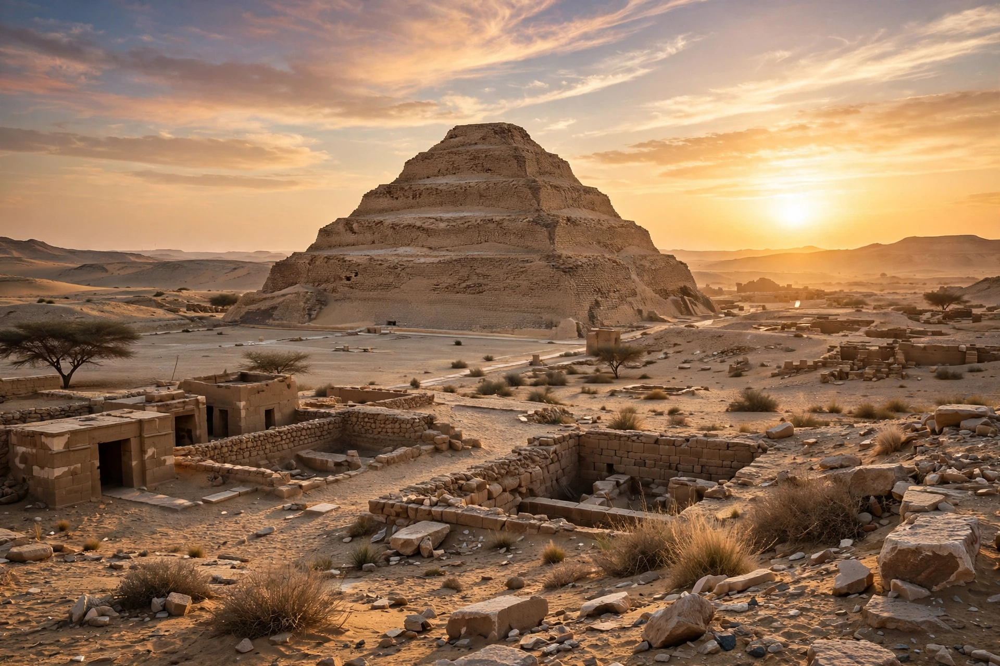

| Location | Saqqara, Egypt |
|---|---|
| Constructed | c. 2670 BC (Third Dynasty) |
| Pharaoh | Djoser (Netjerikhet) |
| Architect | Imhotep |
| Type | Step pyramid (six steps) |
| Height | 62.5 m (205 ft) |
| Base | 121 m × 109 m |

The Pyramid of Djoser (also called the Step Pyramid) is an archaeological site in the Saqqara necropolis, Egypt, northwest of the ruins of Memphis. Built in the 27th century BC during the Third Dynasty for the burial of Pharaoh Djoser, it is the earliest colossal stone building in Egypt and the first pyramid built by the ancient Egyptians. Its architect, the vizier Imhotep, was later deified — a rare honour for a non-royal.
The monument evolved in stages: beginning as a square mastaba, it was enlarged twice before being raised into a four-stepped, and finally a six-stepped, pyramid of limestone rising 62.5 metres. Beneath it lies a labyrinth of tunnels and chambers totalling nearly 6 km, including the burial chamber of pink granite and rooms decorated with blue-green faience tiles imitating reed matting.
The pyramid stands within a vast mortuary complex enclosed by a niched limestone wall 10.5 m high with fourteen false doors and a single entrance. It contains courtyards, chapels, the Heb-Sed festival court with shrine facades representing Egypt's provinces, a mortuary temple, and the serdab — a sealed chamber holding a statue of Djoser peering out through two eye holes. The complex translated into permanent stone the forms of earlier mudbrick and reed architecture.
After a long restoration, the pyramid reopened to visitors in March 2020; it forms part of the UNESCO World Heritage Site of Memphis and its necropolis.